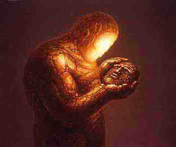
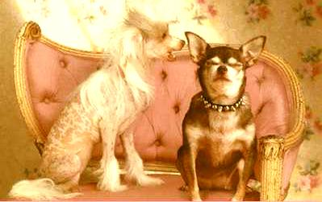

- Conceito e Realidade
|  |
por: Julio Cesar Guerrero
Quem ou o quê pode garantir que conceito e realidade são absolutamente iguais?O conceito é uma coisa e a realidade é outra e existe a tendência de superestimar nossos próprios conceitos.
É interessante como vivemos numa civilização que acredita que rotular é entender. Basta dar um conceito para algo e passamos a lidar com este algo como se o conhecêssemos.
Veja por exemplo o elétron, um dos maiores mistérios da física. É algo complexo, dual, antagônico e paradoxal. Toda vez que vejo alguém questionando algo por ser paradoxal sempre me lembro que uma das estruturas fundamentais da realidade é em si pleno paradoxo. Mas aí dá-se o conceito e pronto, usamos o termo elétron como se o compreendêssemos.
Creio que isto é interessante. Rotular, conceituar algo pode nos ajudar , mostra que há algo lá, mas não nos revela, ao contrário muitas vezes nos afasta, da realidade que queremos encontrar.
A um processo psicológico qualquer, corretamente estruturado mediante uma lógica exata, opõe-se outro diferente, rigidamente formado com lógica similar ou superior; e então ?
Duas mentes severamente disciplinadas dentro de férreas estruturas intelectuais, discutindo entre si, polemizando sobre tal ou qual realidade, crêem, cada uma, na exatidão de seu próprio conceito e na falsidade do conceito alheio; mas, qual delas tem a razão?Interessante como apesar de tudo ainda estamos presos a concepção, eu chamaria de, jesuítica do confronto. Um quer demonstrar que a idéia do outro está errada. Será que vamos sempre limitar toda troca de informações nisso? Em converter? Será que ninguém se aproxima de um debate com uma proposta muito mais ampla e sensata, a meu ver, que é uma troca de informações, uma troca de pontos de vista, considerando que cada um pode permanecer com suas próprias concepções?
Quem poderia, honestamente, inclinar-se por um ou outro dos polemizadores? Como poderíamos, honestamente, garantir um ou outro lado? Em qual deles conceito e realidade são iguais?Se o conceito é uma elaboração mental creio que o conceito nunca vai ser igual a realidade, ele é sempre uma aproximação, um falar sobre, um indicar algo.
Indiscutivelmente, cada cabeça é um mundo e em todos e em cada um de nós existe uma espécie de dogmatismo pontifício e ditatorial que quer nos fazer crer na igualdade absoluta de conceito e realidade.Desfazer esse equívoco e perceber que o conceito alude a realidade mas não é a realidade e, mais, não pode ser a realidade, parece uma proposta comum a muitas linhagens.
Tudo que temos é uma descrição da realidade, criada por conjunturas históricas, adequadas a esse tempo e lugar no qual estamos. Cada época tem uma forma de lidar com a realidade.
Abrir-se ao novo é a difícil facilidade do clássico.
Infelizmente, as pessoas querem descobrir, ver em todo fenômeno natural seus próprios dogmas/prejulgamentos, conceitos, preconceitos, opiniões e teorias; ninguém sabe ser receptivo, ver o novo com mente limpa e espontânea.Creio que aqui há o desejo de continuidade e o medo que todo novo traz consigo pois ameaça o frágil edifício da personalidade que domina as pessoas. Mudar é sempre morrer um pouco e como teme a morte a personalidade que sabe ter seu poder apenas na ilusão da permanência, mantida através da construção de uma falsa continuidade, conceitual, pois na realidade nada há que a apoie. O que é a personalidade, ou ego, em última instância? Um conceito que tenta fazer-se real. Assim nota-se que vai procurar desesperadamente "provar" que o conceito é real, para provar-se a si mesma como existente, quando mais não é que conceito, descrição, resultante inexistente em si.
Que os fenômenos falassem ao sábio seria o indicado. Desafortunadamente, os sábios desses tempos não sabem escutar, não sabem ver os fenômenos, só querem ver nos mesmos a confirmação de todos os seus preconceitos.Poderíamos mudar o termo sábio aqui, só para garantir um cuidado com os termos, este tempo tem seus sábios, que obviamente percebem a diferença que estamos debatendo, mas estes sábios não estão exatamente no centro das pesquisas científicas nem nas cátedras da filosofia. Estas estão tomadas em grande parte por indivíduos que tem grande intelecto, o que não quer dizer de forma alguma sabedoria e estes se usam da ciência para provar sua própria superioridade, suas certezas e assim não tem a premissa fundamental do cientista: Duvidar sempre e estar pronto a substituir todas suas hipóteses frente a novas evidências.
Ainda que pareça incrível, os cientistas modernos nada sabem sobre os fenômenos naturais.Eu não diria exatamente assim, creio que sabem muito, mas equivocam-se quando pretendem saber tudo. Mais, sabem de muitas coisas mas não conseguem fazer disso algo associado a suas próprias vidas, continuam gerando essa ciência que se especializou em produzir conforto e armas.
Quando vemos nos fenômenos da natureza exclusivamente nossos próprios conceitos, certamente não estamos vendo os fenômenos, mas os conceitos. Contudo, os tontos cientistas alucinados por seu fascinante intelecto, crêem, de forma estúpida, que cada um de seus conceitos é absolutamente igual a tal ou qual fenômeno observado, quando a realidade é diferente.
É interessante, nas chamadas leis da natureza. Os cientistas realizaram interpretações fenomênicas e declararam que descobriram as leis fundamentais da natureza, e consideram agora que a natureza está presa a estas leis. E negam certas descobertas afirmando: "Isto vai contra as leis da natureza?"
Que leis?..
Percebem que é a mesma mente que no passado criou as "leis de Deus" e que também perseguia quem ia contra estas "leis divinas" como se a própria divindade tivesse vindo ditar as leis em pessoa, da mesma forma que hoje usam suas observações, ainda tão frágeis, para já determinar os limites da natureza.Creio que aqui há uma generalização perigosa, todos os cientistas não, uma parte deles sim, uma parte significativa, mas se ler os que estão trabalhando com teorias arrojadas, como a Bootstrap vai notar que eles pensam já de forma bem menos dogmática e justamente estão profundamente cientes que conceito é uma aproximação da realidade , não a realidade em si.
Tão logo a mente observe tal ou qual fenômeno através dos sentidos, apressa-se de imediato a rotulá-lo com tal ou qual termo científico que, indiscutivelmente, só vem a servir como remendo para tapar a própria ignorância.Creio que a mente mecânica, que é a que o ser humano via de regra usa, não é mesmo capaz de ir além e por isso disfarça seus limites, rotulando, limitando a seus próprios limites, tudo o que não pode compreender em essência. Temos que entrar em outro nível da mente para investigarmos diretamente a natureza e seus mistérios, do contrário ficamos apenas a rotular, sem chegar a lugar nenhum.
Paz!
 Nuvem que Passa
Conheça 0
IMAGICKLAN
A Irmandade das EstrelasO local onde os bruxos conspiram...
Clicke aqui para receber informações
Volta para Índice da Tribo
Produzido por Imagick Edições e Comunicações Visuais

Instituto de Pesquisas Psíquicas Imagick
tel: (0xx)(11) 3813.4123